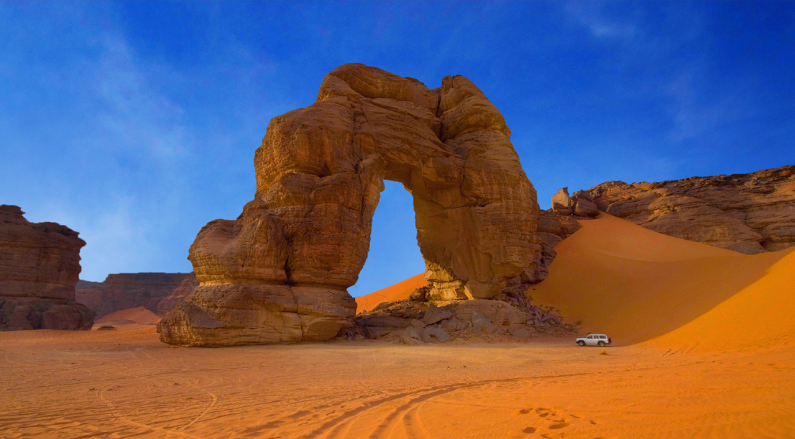
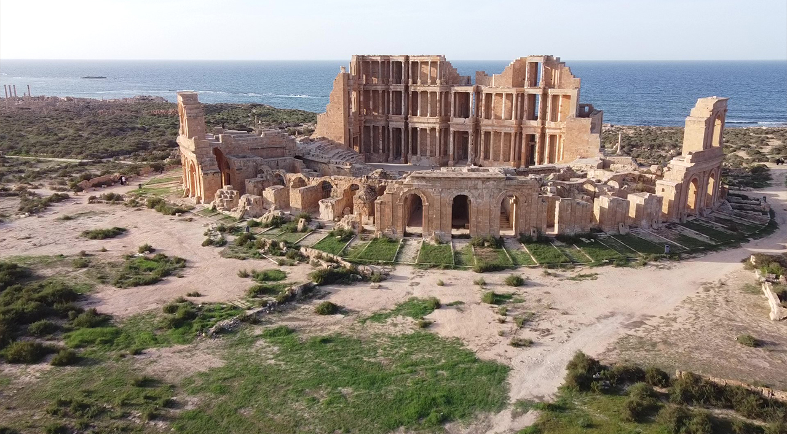
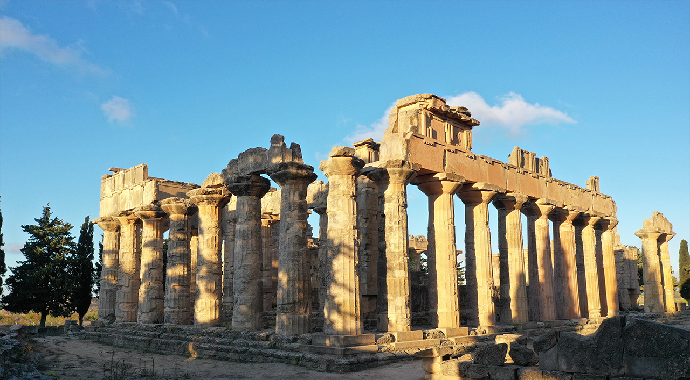
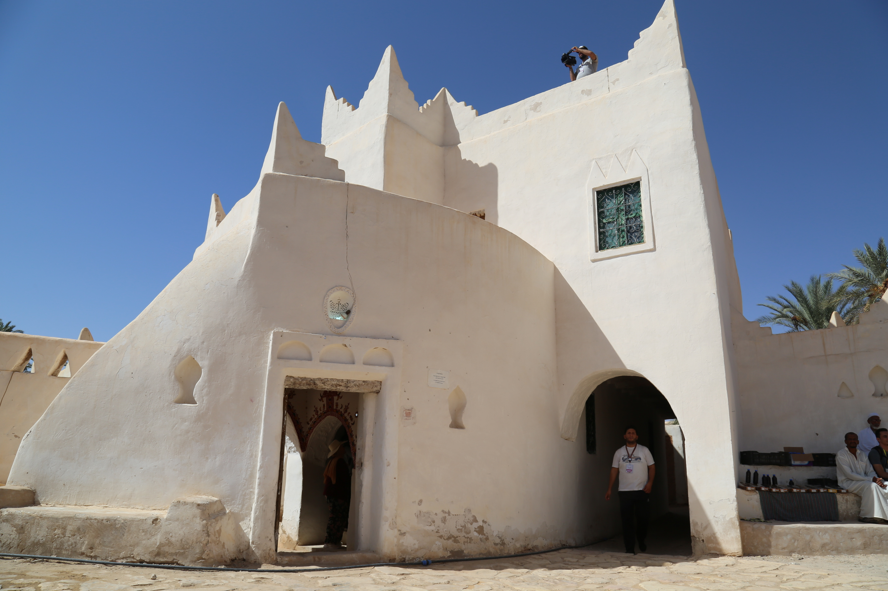

01
لبدة الكبرى
مدينة رومانية كبرى تكشف عظمة التخطيط والعمارة المتوسطية.

متحف مفتوح للحضارات، من المدن المتوسطية إلى الواحات وفنون الصحراء القديمة.
ليبيا متحف مفتوح للحضارات، تضم مواقع أثرية وإنسانية تعكس تعاقب الحضارات المتوسطية والصحراوية والإسلامية.

خمسة مواقع فقط، تعرض ذاكرة ليبيا العالمية عبر البحر والصحراء والواحات.
مدينة رومانية كبرى تكشف عظمة التخطيط والعمارة المتوسطية.

مدينة ساحلية تجمع المسرح القديم ومشهد البحر.

مدينة كلاسيكية في الجبل الأخضر بطبقات حضارية متعددة.

نموذج فريد لعمارة الواحات وتوازن الإنسان مع الصحراء.
نقوش صخرية ومناظر تحفظ ذاكرة الإنسان القديم.
تعاقبت على ليبيا حضارات تركت أثرها في المدن واللغة والعمارة والمسارات التجارية.
جذور محلية عميقة في الجبل والصحراء والواحات.
حضور بحري وتجاري في المدن الساحلية.
مدن كلاسيكية وطبقات معرفية في الشرق الليبي.
مسارح وطرق ومعمار يعكس اتصال ليبيا بالمتوسط.
أسواق ومدن وروابط اجتماعية حاضرة في الذاكرة.
بطاقات Demo فقط، بدون روابط فيديو فعلية الآن.
تصور أولي لمسار المسرح والسوق والشارع الرئيسي.
تعريف بصري بمشهد الجبل الأخضر والمدينة الكلاسيكية.
تجربة تعريفية بأزقة الواحة وعمارتها الداخلية.
عرض تعريفي للنقوش الصخرية والمشهد الصحراوي.